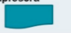

1. ¿Cual de las siguientes NO es una ventaja de la algoritmia?
2. El termino Algoritmo fue acuñado por:
3. El simbolo de  es usado para:
4. El Tiempo de respuesta puede ser definido como:
5. ¿Como definiria la algorimia?
Al dar clic en validar, se revisaran las respuestas ingresadas